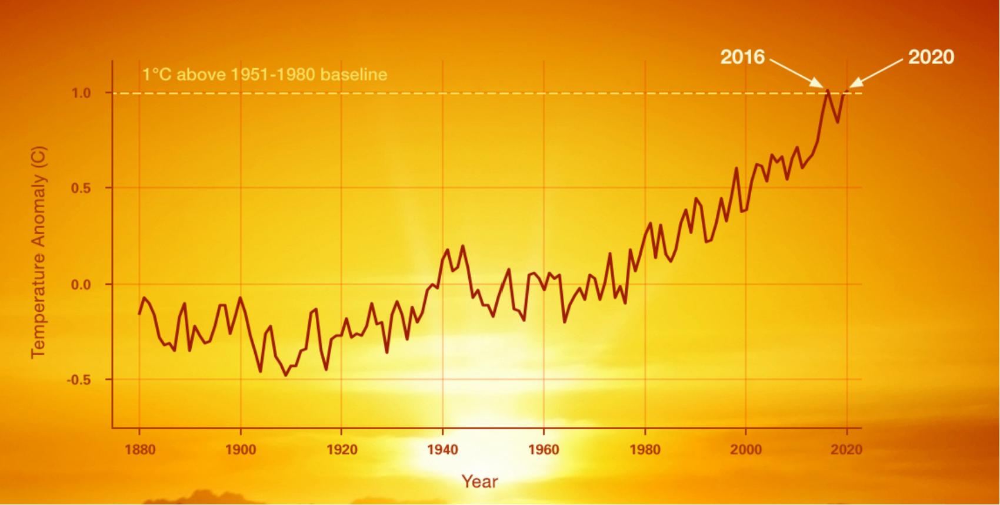
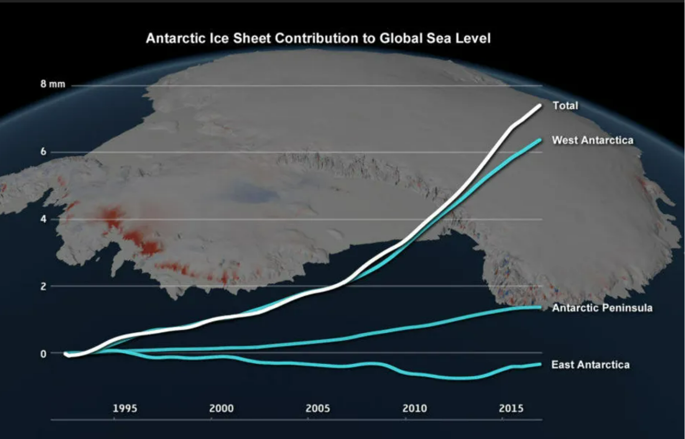
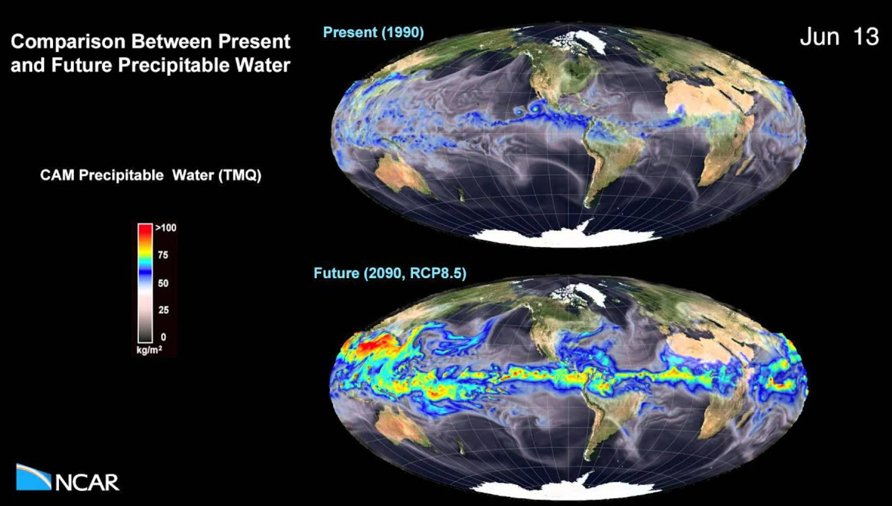
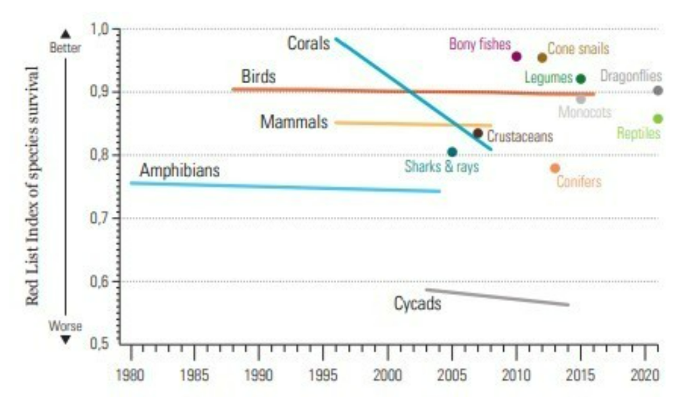

The greatest increase in near-surface air temperature since the 1990s is occurring over the polar region of the Northern Hemisphere largely because of the melting of sea ice and the associated reduction in surface albedo. Greater warming is predicted over land areas than over the ocean. Largely due to the delayed warming of the oceans and their greater specific heat, the Northern Hemisphere—with less than 40 percent of its surface area covered by water—is expected to warm faster than the Southern Hemisphere. Some of the regional variation in predicted warming is expected to arise from changes to wind patterns and ocean currents in response to surface warming. For example, the warming of the region of the North Atlantic Ocean just south of Greenland is expected to be slight. This anomaly is projected to arise from a weakening of warm northward ocean currents combined with a shift in the jet stream that will bring colder polar air masses to the region. 
A warming climate holds important implications for other aspects of the global environment. Because of the slow process of heat diffusion in water, the world’s oceans are likely to continue to warm for several centuries in response to increases in greenhouse concentrations that have taken place so far. The combination of seawater’s thermal expansion associated with this warming and the melting of mountain glaciers is predicted to lead to an increase in global sea level of 0.28–1.01 metres (11–39.8 inches) by 2100. However, the actual rise in sea level could be considerably greater than this. It is probable that the continued warming of Greenland will cause its ice sheet to melt at accelerated rates. In addition, this level of surface warming may also melt the ice sheet of West Antarctica. Paleoclimatic evidence suggests that an additional 2 °C (3.6 °F) of warming could lead to the ultimate destruction of the Greenland Ice Sheet, an event that would add another 5 to 6 metres (16 to 20 feet) to predicted sea level rise. Such an increase would submerge a substantial number of islands and lowland regions. Coastal lowland regions vulnerable to sea level rise include substantial parts of the U.S. Gulf Coast and Eastern Seaboard (including roughly the lower third of Florida), much of the Netherlands and Belgium (two of the European Low Countries), and heavily populated tropical areas such as Bangladesh. In addition, many of the world’s major cities—such as Tokyo, New York, Mumbai, Shanghai, and Dhaka—are located in lowland regions vulnerable to rising sea levels. With the loss of the West Antarctic ice sheet, additional sea level rise would approach 10.5 metres (34 feet). 
The climate changes associated with global warming are also projected to lead to changes in precipitation patterns across the globe. Increased precipitation is predicted in the polar and subpolar regions, whereas decreased precipitation is projected for the middle latitudes of both hemispheres as a result of the expected poleward shift in the jet streams. Whereas precipitation near the Equator is predicted to increase, it is thought that rainfall in the subtropics will decrease. Both phenomena are associated with a forecasted strengthening of the tropical Hadley cell pattern of atmospheric circulation. Changes in precipitation patterns are expected to increase the chances of both drought and flood conditions in many areas. Decreased summer precipitation in North America, Europe, and Africa, combined with greater rates of evaporation due to warming surface temperatures, is projected to lead to decreased soil moisture and drought in many regions. Furthermore, since anthropogenic climate change will likely lead to a more vigorous hydrologic cycle with greater rates of both evaporation and precipitation, there will be a greater probability for intense precipitation and flooding in many regions. 
Climate change disrupts ecosystems and habitats, leading to the extinction of plant and animal species. Loss of biodiversity can have cascading effects on ecosystems and human food supplies. 